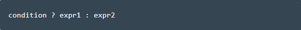
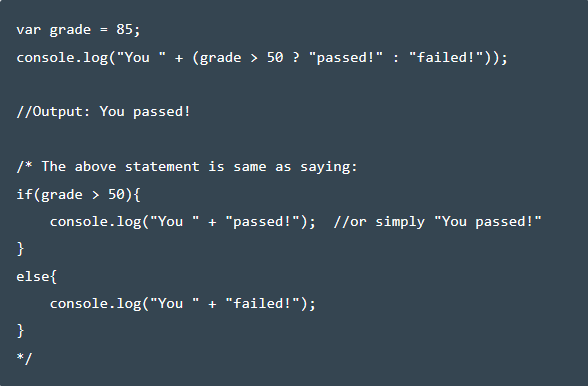

<<!DOCTYPE html>
<html lang="en">
<head>
	<meta charset="UTF-8">
	<title>JS Ternary Operator</title>
	<link rel="stylesheet" type="text/css" href="css/style.css">
</head>
<body>
<header>
    <a href="index.html">Back to curse</a>
</header>
	<div class="set">
        <h3 class="letter">JS Ternary Operator</h3>
    </div>
    <content>The ternary operator is usually used as a shortcut for the if statement.</content>
    <br></br>

		<h4>Example</h4>

</body>
</html>